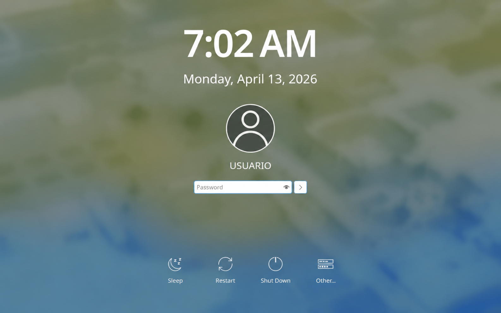
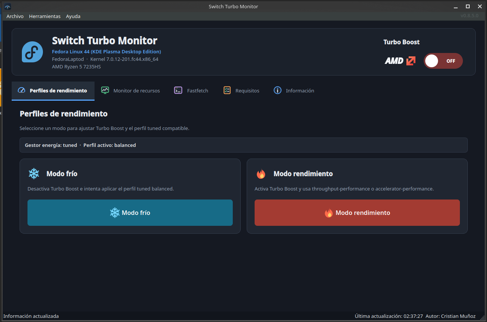

Punchi Dock 0.2.0: un dock ligero para organizar lanzadores en Plasma 6
Un plasmoide para KDE Plasma 6 que organiza aplicaciones, carpetas, separadores, reloj, calendario y Papelera en un dock visual sin reemplazar el gestor de tareas.
Leer artículoMundo Linux
Artículos sobre Linux, Fedora, KDE, software, IA e informática práctica.
Un plasmoide para KDE Plasma 6 que organiza aplicaciones, carpetas, separadores, reloj, calendario y Papelera en un dock visual sin reemplazar el gestor de tareas.
Leer artículo
Cómo Codex puede transformar el aprendizaje de programación en un proceso práctico basado en ideas reales, errores, pruebas y proyectos compartibles.
Leer artículo
Un plasmoide para KDE Plasma 6 que permite consultar y alternar Turbo Boost desde el panel con configuración multiidioma, refresco manual, QML, Bash y PolicyKit.
Leer artículo
Cómo confirmé que el sistema utilizaba plasmalogin y configuré Bloq Num sin aplicar instrucciones destinadas a SDDM.
Leer artículo
Una interfaz visual para cambiar perfiles de rendimiento y Turbo Boost en Fedora/Linux sin depender de la BIOS ni memorizar comandos.
Leer artículo